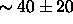
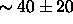
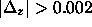
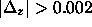

In order to assess the performance of the spectroscopic pipelines, we determined the redshift and classification by hand of every spectrum on 39 plates from the EDR (a total of roughly 23,000 spectra). Comparing with the outputs of the pipeline, after manual correction following the procedure outlined above, we find that 99.7% of galaxies, 97.9% of quasars, and 99.1% of stars are correctly classified, and the redshifts are correct (to within a pixel or two as determined by eye) for 99.7% of the galaxies, 98.0% of the quasars, and 99.6% of the stars.
We have also compared outputs for plates observed with multiple
pluggings, and have found that redshifts for galaxies in the main
sample are reproducible to of order 30 km s . Finally, we have
compared our redshifts to those found in the literature (e.g., LCRS;
shectman96), and find differences consistent with their and
our quoted errors. A similar comparison with the ENACS survey
enacs shows a mean offset of  km s
. Finally, we have
compared our redshifts to those found in the literature (e.g., LCRS;
shectman96), and find differences consistent with their and
our quoted errors. A similar comparison with the ENACS survey
enacs shows a mean offset of  km s ,
and a dispersion of order 90 km s
,
and a dispersion of order 90 km s , a large part of which can be
accounted for by the ENACS estimated errors, which were confirmed with
repeated measurements. A small number of redshifts from A119 have . These have been traced to possible problems with redshifts for
several objects from a single ENACS pointing.
, a large part of which can be
accounted for by the ENACS estimated errors, which were confirmed with
repeated measurements. A small number of redshifts from A119 have . These have been traced to possible problems with redshifts for
several objects from a single ENACS pointing.
richards01a and schneider01 compare SDSS quasar redshifts with those from NED, and find excellent agreement; in three cases, they found that the NED redshifts were wrong, but in no case was the NED redshift correct and the SDSS redshift wrong.